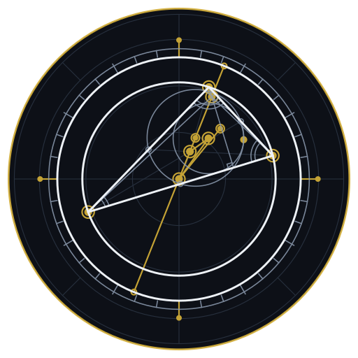

Encyclopedia of Triangle Centers¶

Clark Kimberling’s Encyclopedia of Triangle Centers (ETC) at the University of Evansville catalogues tens of thousands of triangle centers (\(X_1\)–\(X_{73310}\), Parts 1–37) across continuous mathematical families. Within the interconnected GEOMETOR semantic digital archive, these centers are liberated from static tabular listings into exact symbolic algebra, barycentric and trilinear representations, multi-triangle vector constructions, and interactive incidence networks speaking one shared geometric language.
Books & Visual Guides¶
Book Codex
Encyclopedia of Triangle Centers — Complete live corpus of 73,310 triangle centers (\(X_1\)–\(X_{73310}\), Parts 1–37) and 925 geometric family constellations evaluated in exact algebraic number fields across all seven canonical reference triangles (Heronian, Right, Kepler, Kimberling, Golden, Gnomon, Equilateral) with Fullscreen App Mode (F). Every center from X1 through X73310 speaks one unified interactive 5-track format.
Collection 1 Topics — Conjugacies, Lines, Circles & Triangles
Twenty-four focused geometric guides covering classical conjugacies (isogonal, isotomic, complement, harmonic, inversion), named central lines (Euler, Nagel, Feuerbach, Brocard, OI, Soddy), notable circles, and derived central triangles.
Coordinates in Pictures — Trilinears & Barycentrics Visual Primer
Visual geometric demonstration of orthogonal trilinear distances (\(\alpha : \beta : \gamma\)), signed barycentric sub-triangle areas (\(u : v : w\)), the Bridge Identity (\(u:v:w = a\alpha:b\beta:c\gamma\)), and the classic trio (X1, X2, X6).
Guide to Preambles — 925 Inter-Center Group Preambles
Clark Kimberling’s 2026 catalog of 925 preamble essays introducing shared geometric families, central curves, and constructions across all 37 Parts of the Encyclopedia of Triangle Centers.
Scholarly Apparatus & Edition¶
Reference Apparatus
People — Biographical register of classical geometers and modern ETC contributors
Sources — Primary archival HTML editions and provenance records (faculty.evansville.edu/ck6/encyclopedia/)
Bibliography — Primary monographs, journals, catalogs, and research forums
Glossary — Definitions of classical and modern triangle geometry terms, transformations, and derived triangles
Edition & Code
About — Architecture and scholarly mission of
geometor.etcUsing This Edition — Interactive viewer guide, Fullscreen App Mode (
F), andCenterSymbolicRegistryPython APIEngineering Log — Chronological research and implementation journals
Python API Modules — Exact symbolic engine, plate generators, and parser reference